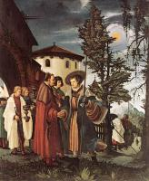

| Усікновення глави святої Катерини
1505-06
|
 | Стигматизація святого Франциска
1507
|
 | Покаяння святого Ієроніма
1507
|
 | Мученицька смерть святого Севастіана
1509-16
|
 | Арешт Христа
1509-16
|
 | Відпочинок під час втечі до Єгипту
1510
|
 | Святий Георгій
1511
|
 | Христос на хресті між Марією та святим Іваном
1512
|
 | Різдво Христове
1513
|
 | Погребіння
1516
|
 | Воскресіння Христове
1516
|
 | Причастя апостолів
1516-18
|
 | Бичування Христа
1518
|
 | Христос у Гетсиманському саду
1518
|
 | Свята Діва Регенсбурзька
1519-20
|
 | Марія з немовлям
1520-25
|
 | Христос прощається зі своєю матір'ю
1520
|
 | Христос на хресті
1520
|
 | Захоплення Святого Флоріана
1520
|
 | Народження Богородиці
1525
|
 | Розп'яття
1526
|
|  | Святий Флоріан виходить з монастиря
1530
|
 | Мученицька смерть святого Флоріана
1530
|
 | Свята Марія
|